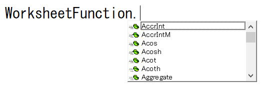

第87回.WorksheetFunction（ワークシート関数を使う）

VBA関数以外に、Excelワークシート関数をマクロVBAで使うことが出来ます、
ワークシート関数は、VBA関数よりはるかに多くの関数があるので、ぜひ活用したいところです。。
ワークシート関数を使う事で、VBAコードを非常に簡潔に記述することが出来る場合が多いものです。
エクセル入門
ワークシート関数の使い方
Range("B1") = WorksheetFunction.CountA(Columns(1))
引数は、ワークシート上での関数入力と同一となります。
WorksheetFunctionで使用できる関数
文字列操作、日付/時刻、これらの関数はほとんど使えません
VBAでは関数ではなく、セル（Rangeオブジェクト）のOffsetプロパティが使えます。
データベース関数は使用できません
データベース関数は使えません。
もし、どうしても使いたい場合は、
ワークシートにVBAでデータベース関数を入れて、結果の値だけを取得してくる方法になります。
最近のバージョンで追加されたピリオド付きの関数の関数名
このような、
○○○.△△△
このような形式の関数は、
○○○_△△△
このように、.ピリオドが_アンダーバーに変換されています。
WorksheetFunctionで使える関数を確認する方法
WorksheetFunction.
ピリオドまで入力した時に候補表示されます。
ワークシート関数で使えない関数は、VBAに同等の関数があるか、
VBAでは使う必要のないものという事になります。
個別の関数の使い方
ただし、VBEでは、
引数名が、Arg1, Arg2, ・・・
としか表示されません。
ワークシート関数の引数を熟知していないと使えない事になります。
そのような時は、
ワークシートで関数を入力して確認してください。
関数の結果（戻り値）
ただし、
ワークシート関数の場合に、結果が「#N/A」のようなエラー値になる場合は、
マクロの実行がエラーとなりストップしてしまいます。
このようなエラーに対しては、VBAで個別の対処が必要になってきます。
エラー対応については、本ページ下で説明します。
WorksheetFunctionの使用例．
変数・セル = WorksheetFunction.Countif(Range("A:A"), "abc")
変数・セル = WorksheetFunction.VLookup(Cells(1, 4), Range("A:C"), 3, 0)
変数・セル = WorksheetFunction.Match(Cells(1, 4), Range("A:A"), 0)
引数等が不明な場合は、ワークシート上で確認してください。
検索系の関数での日付の扱い
つまり、Cells(1, 4)に日付が入っているとして、
変数・セル = WorksheetFunction.VLookup(Cells(1, 4)
このように.Valueを指定した場合、日付としては正しく検索されません。
このように、数値で検索することも可能ですが、.Valueを付けないほうが簡単で確実です。
WorksheetFunctionのエラー対処
VBAでエラーが発生すると、マクロが停止してしまいます。
マクロが停止しないようにするための対処が必要になります。
On Error Resume Next
変数 = WorksheetFunction.VLookup(Range("D1"), Range("A:B"), 2, 0)
If Err.Number <> 0 Then
変数 = "なし"
Err.Clear
End If
On Error Resume Nextで、処理を進め、If Err.Numberで判断しています。
件数 = WorksheetFunction.CountIf(Range("A:B"), Range("D1"))
If 件数 > 0
Then
変数 = WorksheetFunction.VLookup(Range("D1"), Range("A:B"), 2, 0)
Else
変数 = "なし"
End If
WorksheetFunction.CountIfは、検索値が無ければ0が戻りますので、それを判定しています。
変数 = Application.VLookup(Range("D1"), Range("A:B"), 2, 0)
Applicationに続けて関数を指定すると、エラーでVBAが停止することは無くなります。
変数には「エラー 2042」が入ります、セルであれば「#N/A」となります。
この書き方は、
Excel97より前の古い記述ですので、まり好んでんで使うようなものではありません。
最後に
豊富で便利なワークシート関数を使わない手はありません。
自力でマクロVBAをダラダラと何十行も書くようなことがないように、
ワークシート関数については、なるべく広く一通り見ておくようにしましょう。
第10回.ワークシートの関数を使う（WorksheetFunction）｜VBA再入門
同じテーマ「マクロVBA入門」の記事
第48回.VBA関数（その他,Fix,Int,Rnd,Round,IsEmpty）
第49回.Like演算子とワイルドカード
第50回.総合練習問題6
第87回.WorksheetFunction（ワークシート関数を使う）
第51回.Withステートメント
第52回.オブジェクト変数とSetステートメント
第53回.Workbookオブジェクト
第54回.Windowsオブジェクト
第55回.Worksheetオブジェクト
第56回.Rangeオブジェクト（RangeとCells）
第57回.Applicationのプロパティ（マクロ高速化と警告停止等）
新着記事NEW ・・・新着記事一覧を見る
VBA100本ノック 100本目：WEBから100本ノックのリストを取得｜VBA練習問題（3月3日）
VBA100本ノック 99本目：自動席替え（行列と前後左右が全て違うように）｜VBA練習問題（3月2日）
VBA100本ノック 98本目：席替えルールが守られているか確認｜VBA練習問題（3月1日）
VBA100本ノック 97本目：Accessデータを取得（グループ集計）｜VBA練習問題（2月27日）
VBA100本ノック 96本目：Accessデータを取得（マスタ結合&抽出）｜VBA練習問題（2月26日）
VBA100本ノック 95本目：図形のテキストを検索するフォーム作成｜VBA練習問題（2月24日）
VBA100本ノック 94本目：表範囲からHTMLのtableタグを作成｜VBA練習問題（2月23日）
VBA100本ノック 93本目：複数ブックを連結して再分割｜VBA練習問題（2月22日）
VBA100本ノック 92本目：セルの色を16進で返す関数｜VBA練習問題（2月20日）
VBA100本ノック 91本目：時間計算（残業時間の月間合計）｜VBA練習問題（2月19日）
アクセスランキング ・・・ ランキング一覧を見る
1.最終行の取得（End,Rows.Count）｜VBA入門
2.RangeとCellsの使い方｜VBA入門
3.変数宣言のDimとデータ型｜VBA入門
4.マクロって何？VBAって何？｜VBA入門
5.Range以外の指定方法（Cells,Rows,Columns）｜VBA入門
6.セルのコピー&値の貼り付け（PasteSpecial）｜VBA入門
7.繰り返し処理（For Next)｜VBA入門
8.セルに文字を入れるとは（Range,Value）｜VBA入門
9.マクロはどこに書くの（VBEの起動）｜VBA入門
10.とにかく書いてみよう（Sub,End Sub）｜VBA入門
このサイトがお役に立ちましたら「シェア」「Bookmark」をお願いいたします。
記述には細心の注意をしたつもりですが、
間違いやご指摘がありましたら、「お問い合わせ」からお知らせいただけると幸いです。
掲載のVBAコードは動作を保証するものではなく、あくまでVBA学習のサンプルとして掲載しています。
掲載のVBAコードは自己責任でご使用ください。万一データ破損等の損害が発生しても責任は負いません。